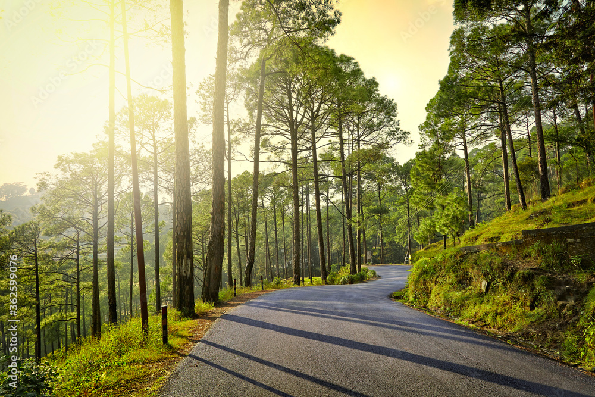
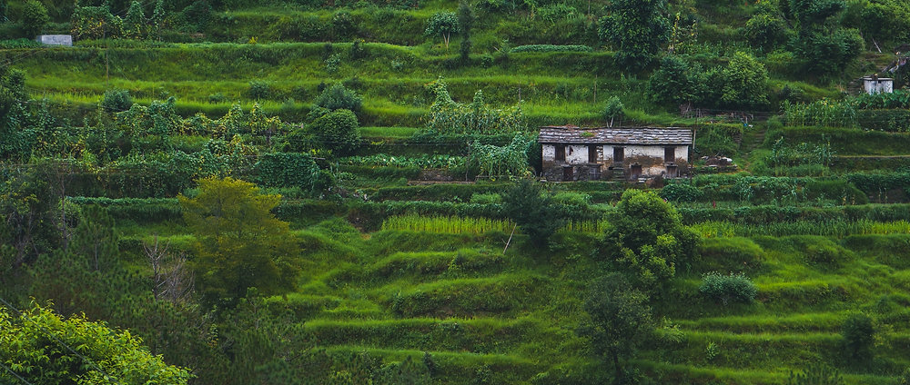
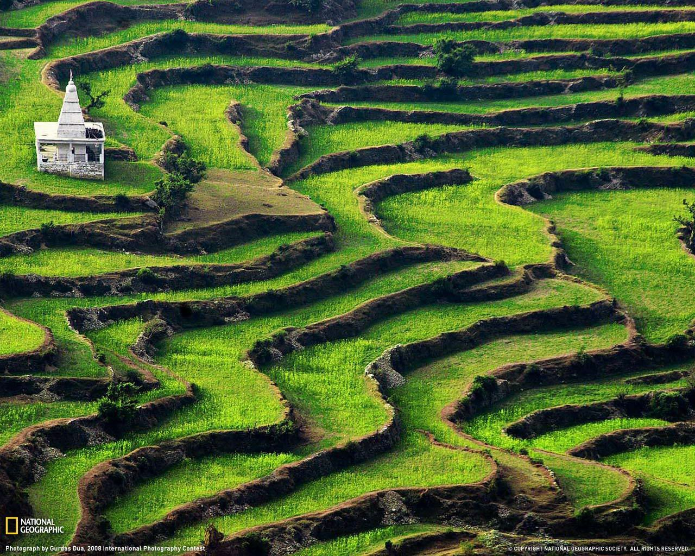

Featured Photos




Ranikhet, located in the Kumaon region of Uttarakhand, is a serene hill station nestled amidst the Himalayas. Known for its breathtaking natural beauty, lush greenery, and tranquil ambiance, Ranikhet is a popular tourist destination for those seeking peace and solitude. The town offers panoramic views of the snow-capped peaks of the Himalayas, including Nanda Devi, Trishul, and Nanda Kot. Ranikhet is also home to lush forests of pine, oak, and cedar trees, making it an ideal destination for nature lovers and outdoor enthusiasts. Visitors can explore the scenic beauty of Ranikhet through leisurely walks, trekking, and nature trails. The town is also known for its colonial-era architecture, including the famous Jhula Devi Temple, which is dedicated to the Hindu goddess Durga. Other attractions in Ranikhet include the Chaubatia Gardens, Upat Kalika Temple, and the Kumaon Regimental Centre Museum. With its serene environment, pleasant climate, and stunning landscapes, Ranikhet offers a rejuvenating retreat for travelers looking to escape the hustle and bustle of city life.